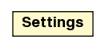

jason.runtime
Class Settings

java.lang.Object
 jason.runtime.Settings
jason.runtime.Settings
public class Settings
- extends java.lang.Object
MAS Runtime Settings for an Agent (from mas2j file, agent declaration)
| Methods inherited from class java.lang.Object |
clone, equals, finalize, getClass, hashCode, notify, notifyAll, toString, wait, wait, wait |
ODiscard
public static final byte ODiscard
- See Also:
- Constant Field Values
ORequeue
public static final byte ORequeue
- See Also:
- Constant Field Values
ORetrieve
public static final byte ORetrieve
- See Also:
- Constant Field Values
OSameFocus
public static final boolean OSameFocus
- See Also:
- Constant Field Values
ONewFocus
public static final boolean ONewFocus
- See Also:
- Constant Field Values
ODefaultNRC
public static final int ODefaultNRC
- See Also:
- Constant Field Values
ODefaultVerbose
public static final int ODefaultVerbose
- See Also:
- Constant Field Values
ODefaultSync
public static final boolean ODefaultSync
- See Also:
- Constant Field Values
Settings
public Settings()
Settings
public Settings(java.lang.String options)
setOptions
public void setOptions(java.lang.String options)
setOptions
public void setOptions(java.util.Map<java.lang.String,java.lang.Object> options)
addOption
public void addOption(java.lang.String key,
java.lang.Object value)
- add user defined option
setEvents
public void setEvents(byte opt)
setIntBels
public void setIntBels(boolean opt)
setNRCBP
public void setNRCBP(java.lang.String opt)
setNRCBP
public void setNRCBP(int opt)
setVerbose
public void setVerbose(java.lang.String opt)
setVerbose
public void setVerbose(int opt)
discard
public boolean discard()
requeue
public boolean requeue()
retrieve
public boolean retrieve()
sameFocus
public boolean sameFocus()
newFocus
public boolean newFocus()
nrcbp
public int nrcbp()
verbose
public int verbose()
logLevel
public java.util.logging.Level logLevel()
isSync
public boolean isSync()
- returns true if the execution is synchronised
setSync
public void setSync(boolean pSync)
getUserParameters
public java.util.Map<java.lang.String,java.lang.Object> getUserParameters()
getUserParameter
public java.lang.String getUserParameter(java.lang.String key)